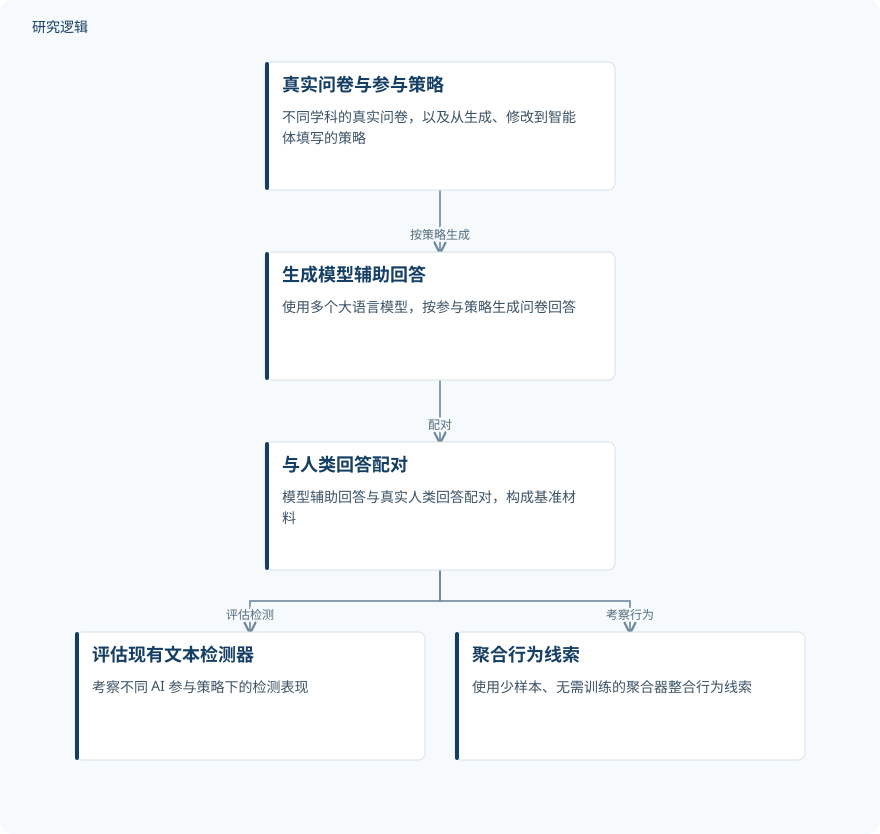

摘要解读
面向在线调查中人工智能辅助回答的检测
Towards Detecting AI-Assisted Responses in Online Surveys
解读更新 2026-11-27 22:13 · 依据公开摘要整理，未核验全文细节
大语言模型参与填写在线问卷，可能影响调查研究的有效性，但如何识别这种参与仍缺乏充分研究。本文通过一个初步基准考察不同使用策略，也提示读者：识别单段生成文本与识别模拟完整受访者的智能体，并不是同一个难题。
文章目录
当大模型成为问卷填写者
在线问卷依赖受访者的回答开展研究，而大语言模型可以参与生成或修改回答。随着参与方式从直接生成扩展到模拟受访者，调查数据中人类作答与模型辅助作答的区分也变得值得关注。
论文聚焦 AI 辅助参与问卷的识别问题，提出初步基准数据集 ASURRE。它覆盖从完整生成、修改到基于人物设定的智能体填写等策略，为比较不同参与方式下的检测表现提供材料。
从参与策略构建 ASURRE 基准
研究使用多个大语言模型，在不同学科的三个真实问卷上，按照不同使用策略生成模型辅助回答，并与真实人类回答配对。摘要将这些材料用于评估现有机器生成文本检测器。
除文本检测外，研究还关注智能体填写留下的受访者层面行为线索，并采用一种简单的少样本、无需训练的聚合器整合这些线索。摘要没有展开聚合器的具体实现。
依据摘要整理的基准与检测过程


仅概括摘要明确陈述的研究环节，不表达未报告的实验配置。
下载 SVG图示关系说明
实线表示相邻阶段的信息流，虚线表示跨阶段联系或反馈。
真实问卷与参与策略 → 生成模型辅助回答：按策略生成；生成模型辅助回答 → 与人类回答配对：配对；与人类回答配对 → 评估现有文本检测器：评估检测；与人类回答配对 → 聚合行为线索：考察行为
模拟完整受访者让检测更难
摘要报告，直接使用 AI 的方式较容易被现有检测器识别；但当基于人物设定的智能体试图模仿完整受访者时，检测器表现趋近于随机水平。这个对比说明，检测效果会随模型参与策略而变化。
研究同时发现，智能体填写不能完全复制受访者层面的行为，仍会留下有辨识度的行为痕迹。单个线索可以通过针对性提示被绕过，但在智能体设置下，线索聚合器的平均 AUROC 比表现最好的现有检测器提高了 +0.14。
摘要尚未交代的样本与验证边界
摘要没有给出人类受访者和回答的具体样本量、各模型及问卷的详细构成，也未列明受试检测器和行为线索的完整清单，因此无法仅凭摘要判断比较是否覆盖了所有相关场景。
摘要也未说明结果在其他问卷、人群或模型上的验证范围，以及聚合器在不同条件下的具体表现。这些是当前资料的阅读边界，不能据此认定论文没有开展相关分析。
阅读启发：从文本转向作答行为
阅读启发：对于关注大语言模型的读者，可以进一步查阅论文如何定义受访者层面的行为线索，以及这些线索与文本检测结果如何互补；同时留意针对性提示为何能够绕过单个线索。
以上为本站阅读启发与建议，不是论文已验证的结论。